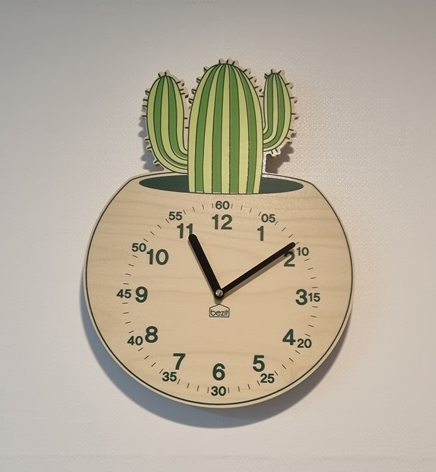

3세 아들은 소리에 민감하게 반응하고 일상 속에서 짜증을 자주 표현함. 임신 중인 어머니는 아들이 혼자서 장난감을 가지고 잘 놀기다가 자기 뜻대로 되지 않거나 감정이 상하면 울고 떼를 쓰는 등 정서 조절의 어려움을 드러냄. 또래들과 어울리는 데 소극적이며, 낯가림이 심하고 함께 놀이 상황에서 조용히 지내는 까다로운 성향은 나타냄. 수면에서 자다가 일어나 칭얼거리고 깊이 잠들지 못하여 혹시 출산 후 지금의 상태가 심화될까 염려스러워함.

1. 아이의 정서·심리적 상태
• 아이는 전반적으로 기질적으로 민감하며 정서 반응의 강도가 높은 편으로, 환경 자극에 대한 반응이 과민하게 나타남. 특히 소리나 예기치 못한 상황에 쉽게 놀라고 불편감을 느끼며, 이를 표현할 때 주로 울음이나 짜증 등 부정적 정서로 나타냄.
• 아이는 안정된 환경에서는 혼자 놀이에 집중하기도 하나, 감정 변화의 기복이 심해 놀이 지속력이 낮고, 자극에 따라 쉽게 흥분하거나 좌절하는 등 민감함.
• 아이는 감정 표현 방식이 미숙하여 스스로 정서를 조절하거나 상황을 이해하는 데 한계가 있으며, 불안정한 감정 상태가 신체화(예: 울음, 짜증, 몸부림)로 드러나는 경우가 많음.
• 현재는 낯선 사람이나 또래와의 접촉에서도 위축된 반응을 보이며, 타인과의 정서적 교류보다는 익숙한 보호자와의 관계에 의존하고 있음.
2. 자아조절 능력
• 아이는 자기조절력 발달 초기 단계로, 감정 상태의 변화에 스스로 대처하거나 상황에 맞게 반응을 통제하는 능력이 부족함.
• 욕구가 좌절되면 즉시 분노나 불만을 즉각적으로 외부에 표현함. 이는 울음, 고집, 공격적 행동보다는 퇴행적이고 회피적인 방식으로 나타남.
• 언어 표현력이 아직 충분히 발달하지 않아 자신의 욕구나 감정을 말로 설명하기보다는 감정으로 나타냄.
• 환경 자극이 강하거나 변화가 급격할 경우 감정 폭발이 잦고, 보호자의 즉각적 개입 없이는 스스로 진정하거나 상황을 정리하는 데 어려움을 보임.
• 자아조절 능력의 취약성은 수면, 식사, 놀이 등 일상 전반에 걸쳐 영향을 미치고 있으며, 일관된 구조와 반복된 훈련이 필요한 시점임.
3. 부모와의 관계
• 아이는 어머니와의 밀착된 애착 관계를 형성하고 있으나, 둘째 출산이라는 환경적 전환기를 앞두고 관계적 긴장감이 높아지고 있음.
• 어머니가 신체적 피로와 심리적 부담을 동시에 경험하고 있어 아이의 감정 요구에 충분히 반응하지 못하는 경우가 늘어나고 있음.
• 아이는 이러한 변화에 대해 혼란과 불안을 느끼고 있음. 그로 인해 어머니의 주의를 끌기 위한 행동(울기, 떼쓰기, 수면 거부 등)이 증가하고 있으며, 이는 애착불안을 반영하는 방식으로 해석됨.
• 평소에는 어머니와 정서적 교류를 원하지만, 예민한 반응을 보일 경우 보호자의 감정도 쉽게 영향을 받아 부정적인 상호작용으로 이어지는 상황이 종종 발생함.
• 아이는 양육자의 정서 상태에 민감하게 반응하며, 일관성과 예측 가능한 반응을 통해 정서적 안정감을 얻는 특성을 지님.
4. 자아개념의 특징
• 아이는 현재 자아개념 형성의 초기 단계로, 자신에 대한 인식이 주로 보호자와의 상호작용을 통해 결정되는 상태임.
• 자신의 행동이 긍정적으로 수용되었을 때에는 놀이 참여도가 높고 자율성이 나타나기도 하나, 부정적 반응을 경험하면 쉽게 위축되거나 자신감을 잃음.
• 또래와의 상호작용이 제한적이며, 주도적으로 관계를 형성하기보다는 방관하거나 조용히 혼자 놀이에 머무르려는 경향이 강함. 이는 사회적 자아 인식과 역할 개념이 아직 형성되지 않았음을 의미함.
• 정서적으로 과도하게 보호자에게 의존하기 때문에 자기 효능감이나 독립성이 낮고, ‘나는 사랑받을 수 있는 존재’라는 내적 확신보다는 상황 반응 중심의 자아 인식을 보임. 보호자의 반응에 따라 자아개념이 쉽게 강화되거나 약화될 수 있어, 일관되고 긍정적인 피드백이 중요한 시점임.
5. 부모 양육 및 훈육 방법
1) 예측 가능한 일상 루틴을 통해 정서적 안정
아이는 새로운 상황이나 환경 변화에 민감하게 반응하므로, 일정한 시간에 식사하고 자며, 놀이와 외출도 일정한 흐름을 따르도록 루틴을 형성함으로써 아이의 불안을 줄이고 정서적 안정감을 높일 수 있음. 변화가 필요한 경우에는 사전에 충분히 예고(핸드폰 알람, 벽시계 등)해 주고 준비할 수 있는 시간을 제공함.
2) 감정 공감과 언어화를 통해 감정 조절 돕기
아이가 짜증이나 울음으로 감정을 표현할 때, "속상했구나", "지금 화가 났구나"처럼 감정을 정확하게 언어로 반영해주고, 그 감정이 이해받는 경험을 반복함으로써 점차 감정을 말로 표현할 수 있는 능력을 키움. 감정을 억누르기보다 표현하되, 표현 방법을 훈련하는 방식으로 접근함.
3) 일관된 훈육 태도로 행동의 경계와 안전
아이가 울거나 떼를 쓰며 요구를 관철시키려 할 때, 양육자의 반응이 매번 달라지면 아이는 혼란을 느끼고 더욱 강하게 반응하게 됨. 따라서 정해진 규칙에 대해 일관된 태도로 반응하고, 안전이나 타인에게 해가 되는 행동은 단호하게 제지하면서도 차분한 말투로 설명하는 방식이 필요함.
4) 긍정적 행동에 대한 즉각적 강화
작은 행동이라도 아이가 스스로 조절하거나 긍정적인 행동을 보였을 때, 즉시 구체적으로 칭찬하고 격려함으로써 아이의 자기 효능감과 자아존중감을 높임. 예: “화를 참았구나, 정말 멋졌어”처럼 행동에 대한 구체적인 칭찬은 자아개념 형성에 긍정적인 영향을 미침.
5) 출산 전후 특별한 시간을 마련해 애착 유지
어머니는 둘째 출산 전후, 첫째 아이가 정서적 소외감을 느끼지 않도록 하루 일정 시간은 첫째와만 함께하는 ‘특별한 시간’을 마련함. 짧은 시간이라도 눈 맞춤, 신체 접촉, 아이가 주도하는 놀이를 통해 ‘나는 여전히 사랑받는 존재’라는 안정된 정서 기반을 유지시켜야 함.
6. 가족놀이
1) 감정 얼굴 카드 놀이
• 활동 내용:다양한 표정이 그려진 얼굴 카드를 보여주며 “이건 어떤 기분일까?”, “너는 언제 이렇게 느껴봤니?”라고 묻고, 아이가 자신의 감정을 말로 표현하도록 유도함.
• 효과:감정 인식과 표현 능력 향상, 언어를 통한 자기 이해 발달에 도움을 줌.
2) 감정 표현을 위한 색깔 놀이
• 활동 내용:색깔별로 감정(예: 빨강=화남, 파랑=슬픔 등)을 정한 후, 클레이나 물감으로 색을 골라 자신의 감정을 표현하고 그에 대한 이야기를 나눔.
• 효과:감정을 색으로 시각화함으로써 말로 표현하기 어려운 감정을 외부로 드러내는 안전한 통로 제공.
3) 신체 감각 놀이
• 활동 내용:모래, 촉감볼, 물, 천 등 다양한 감각 자극 도구를 활용해 만지고 탐색하는 놀이를 하거나, 균형 잡기·장애물 통과하기 등 전신을 사용하는 활동 진행.
• 효과:감각 과민 아이의 자극 수용력 조절에 도움을 주고, 긴장된 근육을 이완시키며 정서적 안정 유도.
4) 역할 놀이
• 활동 내용:병원놀이, 가족놀이 등을 통해 엄마·아빠·동생 등의 역할을 하며 감정이나 경험을 재현하게 함. 인형에게 밥 먹이기, 재우기 등 돌봄 행위를 통해 정서 표출 기회를 제공.
• 효과:현실에서 겪는 불안이나 갈등을 놀이로 표출하고 재구성할 수 있는 치유적 경험 제공.
5) 또래 관계 모의 놀이
• 활동 내용:인형이나 동물 모형을 이용해 “친구가 놀자고 했어”, “이 친구는 화가 났대” 등의 상황극을 함께 만들고, 그에 대해 아이의 반응을 끌어내는 놀이 진행.
• 효과:또래 간 갈등 상황을 간접적으로 경험하고 대처 방법을 배울 수 있으며, 사회적 상호작용에 대한 기본 개념을 내면화하는 데 도움됨.
2025.04.16 - [상담] - 3세 외동아 자아를 위한 감각통합 촉감 놀이로 양육스트레스 해소
3세 외동아 자아를 위한 감각통합 촉감 놀이로 양육스트레스 해소
3세 외동아들은 반복적인 신체 만지작거림 및 긁어대는 행동할 때마다 하지말라고 해도 엄마의 지시에 반응하지 않아요. 특히, 수면 중 각성 및 울음에 대한 대응 등으로 인해 심리적 스트레스
think-sis.co.kr
2025.04.09 - [상담] - 아동은 장난감 던지기, 울기, 편식, 수면 등 혼란스러운 양육
아동은 장난감 던지기, 울기, 편식, 수면 등 혼란스러운 양육
16개월 된 아들은 장난감을 던지는 행동을 자주 보이며, 원하는 것이 충족되지 않거나 좌절을 경험할 때는 울거나 큰 소리로 소리를 지르는 등을 강하게 나타내기 때문에 엄마는 아들과 일상적
think-sis.co.kr